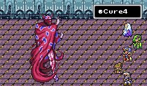
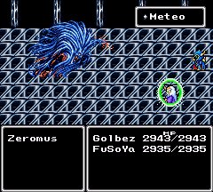

|
Boss
D.Knight
ก่อนที่ Cecil จะเปลี่ยนอาชีพเป็น Paladin นั้น
เขาต้องต่อสู้กับตัวเขาเองในด้านมืด ซึ่งก็คือ D.Knight
ในการต่อสู้นั้น ให้เลือก "ป้องกัน" เพียงอย่างเดียว
ไม่จำเป็นต้องไปต่อสู้ด้วย ก็จะชนะได้อย่างง่ายดาย
Karate
Karate ก็คือ Yang นั่นเอง
ซึ่งจะได้ต่อสู้กับเขา ในช่วงที่บุกเข้าไปในปราสาท Baron
โดยจะเจอเขาที่โรงแรม (INN) ภายในหมู่บ้าน
Element Boss
ในภาคนี้จะเจอศัตรูที่เป็นธาตุต่างๆ อยู่ 4 ธาตุ คือ ดิน น้ำ ลม ไฟ
ซึ่งจะเจอตามเนื้อเรื่องปรกติอยู่แล้ว
อีกทั้งในตอนท้ายของเกม ยังต้องต่อสู้กับพวกเขา 4 ตัวซ้อนเลยทีเดียว
Milon Z. (Element Earth)
จะเจอเขาในระหว่างที่ Cecil กำลังเดินทางเพื่อเปลี่ยนอาชีพเป็น Paladin
Kainazzo (Element Water)
Kainazzo ปลอมตัวเป็นพระราชาของเมือง Baron
นั่นเป็นเหตุผลว่า ทำไมพระราชาจึงนิสัยเปลี่ยนไป
Rubicant (Element Fire)

เจอเขาครั้งแรกในขณะที่กำลังต่อสู้อยู่กับ Edge
เขาเป็นคนที่เป็นลูกผู้ชายมาก ^^;
คือ ก่อนสู้กับเขา เขาจะเติม HP และ MP ของฝ่ายเราให้เต็ม
เพื่อจะได้ไม่มีการได้เปรียบเสียเปรียบ
Valvalis
เมื่อช่วย Rosa มาจาก Golbez ได้แล้ว
จะเจอ Valvalis ออกมาขัดขวาง
Golbez
ศัตรูตัวนี้ ในครั้งแรกคิดว่าเป็นผู้บงการทั้งหมด
แต่แท้ที่จริง เขาก็โดนผู้อื่นชักใยอยู่เบื้องหลัง
ที่สำคัญที่สุด เขาเป็นพี่ชายของ Cecil อีกด้วย !!!
Zemus
ศัตรูตัวนี้แหละ คือผู้ร้ายที่แท้จริง
หลังจากที่ Golbez และ FuSoYa ช่วยกันจัดการเขาแล้ว
เขาก็กลายร่างไปเป็น Zeromus
Zeromus

หลังจากกลายร่าง Zeromus ก็ได้ฆ่า Golbez และ FuSoYa
Zeromus แข็งแกร่งมาก ต้องทำอย่างไรจึงจะชนะมันได้ ???
Zeromus

หลังจากโยน Crystal ใส่ Zeromus มันจะเผยร่างจริงออกมาให้เห็น
|